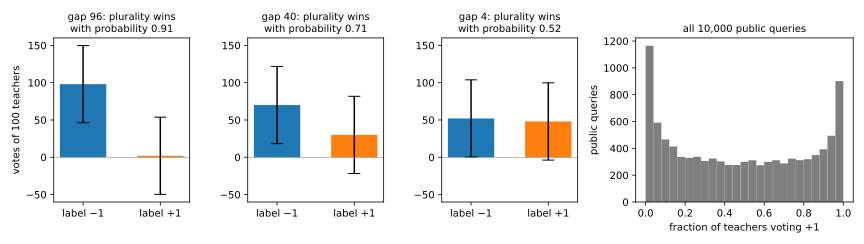

40 Private prediction: PATE and in-context learning
40.1 Why this matters
Training with differential privacy (DP) by stochastic gradient descent (SGD) with clipped, noisy gradients, called DP-SGD (DP-SGD), makes the weights private, and after that every use of the model is free: answering a query is post-processing of the weights. But you pay during training, and you must own the training loop. Sometimes you cannot. The model may be a large language model (LLM) you can prompt but not train, a model without gradients such as a decision forest, or a tool that will answer a few dozen questions in its whole life, for which a private training run is overkill.
The alternative is to train ordinary models, never release them, and make each answer private instead. The idea that makes this work is one record, one vote. Split the private records into \(k\) disjoint shards and train one model, a teacher, on each. To answer a query, let every teacher vote for a label, add noise to the vote counts, and release only the winning label. A record lives in one shard, so it can change one teacher and so one vote, however that teacher was trained and however badly it overfits. That is the whole privacy argument. The accuracy argument is about the gap between the top two vote counts against the noise, and the noise must grow with the number of answers. Private prediction is therefore cheap for a few queries on which the teachers agree, and expensive otherwise. The method that turns those answers into a releasable model is private aggregation of teacher ensembles (PATE), due to Papernot et al. (2017).
40.2 The noisy vote and its cost
Fix the partition before looking at the data, by a hash of a record identifier rather than by position. Then adding or removing a record changes exactly one shard and one teacher, and that teacher’s vote can move from one label to another: one count goes down by 1 and another goes up by 1. The vote histogram moves by at most \(\sqrt2\) in Euclidean length. If shards were cut by position, inserting one record at the front would shift every later record into the next shard and could change every teacher; the guarantee would be gone.
Two mechanisms release the label. LNMax adds Laplace noise of scale \(b\) to each count and releases the index of the largest noisy count. It is report-noisy-max (Selection) on scores that one record moves by at most 1 each, in opposite directions, so each answer is \((2/b)\)-DP. GNMax adds Gaussian noise of standard deviation \(\sigma\) to each count instead. Adding the noise is the Gaussian mechanism on a vector of sensitivity \(\sqrt2\), and taking the argmax is post-processing, so in Rényi differential privacy (RDP), the accounting whose curves simply add under composition (Rényi DP), each answer costs \(\alpha/\sigma^2\) at order \(\alpha\) (Papernot et al. 2018). \(Q\) answers cost \(Q\alpha/\sigma^2\), even when each query is chosen after seeing the earlier answers. That curve is a line whose slope is \(Q/\sigma^2\), and a line converts to an \((\varepsilon, \delta)\) that depends only on its slope. Call \(\rho(\varepsilon, \delta)\) the largest slope that still converts to your budget; then the noise you need is \[\sigma = \sqrt{\frac{Q}{\rho(\varepsilon, \delta)}}. \tag{40.1}\] At \(\delta = 10^{-5}\), \(\rho = 0.0306\) for \(\varepsilon = 1\) and \(0.3731\) for \(\varepsilon = 4\).
Three consequences follow from this formula. First, the noise grows like \(\sqrt Q\): a hundred times more answers need ten times more noise. Second, neither \(k\) nor anything about the teachers appears in it. A teacher can be a network trained without noise, a decision forest or a human annotator who saw one shard; only the noise and the number of answers set the cost. The noise can be large in absolute terms because the counts are large: with 250 teachers, noise of standard deviation 40 is noticeable but not overwhelming. Third, release only the label. Publishing the noisy counts too would release a whole vector, and the data-dependent analysis below needs the label alone.
| Budget | Answers \(Q\) | GNMax \(\sigma\) | LNMax standard deviation \(\sqrt2b\) |
|---|---|---|---|
| \(\varepsilon = 1\) | 1 | 5.72 | 2.85 |
| 100 | 57.2 | 113 | |
| 1,000 | 181 | 361 | |
| 10,000 | 572 | 1,140 | |
| \(\varepsilon = 4\) | 1 | 1.64 | 0.709 |
| 100 | 16.4 | 32.1 | |
| 1,000 | 51.8 | 103 | |
| 10,000 | 164 | 327 |
Table 40.1 shows why GNMax is the default. LNMax is analysed as a pure-DP step, which is cheap for one answer, and indeed needs less noise there. But the Gaussian’s privacy loss is itself Gaussian and composes without slack, so from 100 answers on GNMax needs about half the noise. The RDP accountant is not exact here: at the \(\sigma\) it picks for \(\varepsilon = 1\), the exact \(\varepsilon\) of a Gaussian histogram is 0.915, so the accountant overstates the cost by about 9%.
40.3 When a noisy vote is accurate
On two labels, GNMax returns the plurality label when the noise difference between the two counts does not overturn the gap \(g\). The difference of two independent Gaussians of standard deviation \(\sigma\) is a Gaussian of standard deviation \(\sqrt2\sigma\), so the plurality wins with probability \(\Phi(g/(\sqrt2\sigma))\), where \(\Phi\) is the standard normal distribution function. With more labels, the probability of losing to any competitor is at most the sum of the probabilities of losing to each, a union bound that is exact on two labels and loose when several labels are nearly tied with the winner.
The part’s running example makes this concrete: 50-dimensional Gaussian inputs labelled \(\pm1\) by a fixed random network, 10,000 private records, teachers that are regularized logistic regressions on one shard each. With \(k = 100\) teachers and the noise for 1,000 answers at \(\varepsilon = 4\), \(\sigma = 51.8\), a query on which 98 teachers vote one way, a gap of 96, gets the plurality label with probability 0.9051. One split 70 to 30 gets it with probability 0.7076, and one split 52 to 48 with probability 0.5218, barely better than a coin (Figure 40.1).

How many teachers? More teachers multiply the gap by \(k\) while the noise stays fixed, but each teacher sees fewer records and agrees less with the others. On the running example the second effect is weaker than you might fear. Going from 25 teachers of 400 records to 500 teachers of 20, each teacher’s accuracy falls from 0.8954 to 0.6459, but the noiseless plurality vote hardly moves, staying between 0.9336 and 0.9403: a majority of many weak, nearly independent voters is right far more often than any one of them. The median gap grows in absolute terms, from 25 to 138, and since the noise does not depend on \(k\), more teachers win. With 100 answers at \(\varepsilon = 4\), 500 teachers answer with accuracy 0.9237, about a point below their noiseless vote. With 1,000 answers at \(\varepsilon = 1\), even 500 teachers fall to 0.6987. Note the ceiling: noise can only pull answers towards a coin flip, so no private answer beats the noiseless vote, and on queries the teachers find hard any noise makes the answer close to random.
40.4 Private answers against a private model
You have one budget. Spend it on DP-SGD, and the model’s accuracy is fixed however many queries it answers. Spend it on answers, and accuracy starts near the noiseless ensemble and, on this task, falls towards a coin flip as \(Q\) grows, because \(\sigma\) grows like \(\sqrt Q\). A falling curve crosses a constant at most once, so there is a break-even number of queries \(Q^*\) below which private answers win.
| \(\varepsilon\) | DP-SGD accuracy (2 runs) | Break-even \(Q^*\) | Best \(k\) |
|---|---|---|---|
| 0.5 | \(0.8164 \pm 0.0060\) | 58 | 500 |
| 1 | \(0.9128 \pm 0.0207\) | 18 | 500 |
| 2 | \(0.9438 \pm 0.0039\) | 0 | — |
| 4 | \(0.9573 \pm 0.0024\) | 0 | — |
| 8 | \(0.9605 \pm 0.0004\) | 0 | — |
On the running example (Table 40.2), at \(\varepsilon = 0.5\), where DP-SGD reaches only 0.8164, 500 teachers answer up to 58 queries more accurately than the private model, and at \(\varepsilon = 1\) up to 18. From \(\varepsilon = 2\) on, DP-SGD beats even a single noiseless vote, because the ensemble’s ceiling is below DP-SGD’s 0.9438 (Figure 40.2). The pattern is general: private prediction wins at small budgets, where DP-SGD loses much, and for few queries. Two things the comparison leaves out cut the other way. If you cannot run DP-SGD at all, because the model is behind an interface or the data cannot be pooled, the comparison is with nothing. And private prediction runs \(k\) models on every query, while DP-SGD trains once.

40.5 PATE: from answers to a model
Answers cost budget forever; a model costs it once. PATE spends the budget on labelling \(Q\) public, unlabelled inputs with GNMax, then trains a student on them and releases only the student. The student’s training reads public inputs and the \(Q\) noisy labels and nothing else, so it is post-processing: its weights and every prediction it ever makes cost exactly the \(Q\) answers, whatever its size, training algorithm or number of predictions. The student may choose which inputs to have labelled after seeing earlier labels, since the composition allows adaptive queries.
Three things limit the student: it learns from \(Q\) examples rather than \(n\), some of its labels are wrong, and the plurality vote has its ceiling. More labels mean more noise per label, so for each \(\varepsilon\) there is a best \(Q\). On the running example, with 250 teachers and the part’s network as student, the best student reaches 0.8238 at \(\varepsilon = 1\) and 0.8898 at \(\varepsilon = 4\), against 0.9128 and 0.9573 for DP-SGD, which wins at every budget. The best \(Q\) was chosen by looking at test accuracy, itself a leak that Hyperparameter tuning shows how to pay for. The reasons PATE loses here are the conditions under which it wins elsewhere: the task is binary, so a wrong label is as damaging as it can be; the teachers are weak and often disagree; the student needs thousands of labels; and DP-SGD does well even at \(\varepsilon = 1\). On a handwritten-digit benchmark (MNIST), where teachers agree on most inputs, Papernot et al. (2018) report a student with 98.5% accuracy against a non-private 99.2%, at \(\varepsilon = 1.97\) with 286 answered queries.
PATE needs public inputs from the same distribution as the private data, which are plentiful for images or text and absent for medical records, and they must really be public: an input that is someone else’s private record is protected by nothing. And the teachers are non-private models that must stay secret. An attacker who steals one can attack its shard directly, so PATE moves the trust from the training algorithm to the server that holds the teachers.
40.6 Paying less when the teachers agree
The cost \(\alpha/\sigma^2\) is a worst case over vote histograms, including ties that one teacher decides. When 249 of 250 teachers agree, one record cannot realistically change the answer, and the data-dependent analysis of Papernot et al. charges such a query less: its cost is roughly proportional to the probability that the noise overturns the plurality. Figure 40.3 shows it for one answer with \(\sigma = 40\) at order 8. Up to a gap of about 100 the bound is no better than the data-independent 0.005; then it falls steeply, to \(1.23 \times 10^{-3}\) at a gap of 150. The bound is valid but not tight: the exact cost on two labels is five times lower at that gap.

The total saving depends on how many queries have large gaps. On the running example only 0.2879 of the public queries have a gap of at least 150 with 250 teachers, so 1,000 answers with \(\sigma = 40\) cost \(\varepsilon = 4.37\) instead of 5.38 at \(\delta = 10^{-5}\), about 20% less. On tasks where nearly every teacher agrees on nearly every input, almost every answer is nearly free. Confident-GNMax exploits this by design: it first checks, with a noisy maximum count of large noise \(\sigma_1\), whether the consensus clears a threshold, and answers with GNMax only if it does. The check costs a little on every query, the answer only on the confident ones, which are also the ones more likely to be right. The price is that the student never sees labels near the decision boundary. On the running example it answered 459 of 1,000 queries and trained a student to 0.8894 at a data-independent \(\varepsilon = 3.59\), about what plain GNMax reached at \(\varepsilon = 4\).
There is a trap. The data-dependent \(\varepsilon\) is computed from the votes, so it is itself private information, and its sensitivity is large: one record changes one teacher, whose votes may change on every query. Papernot et al. publish it only after adding noise calibrated to its smooth sensitivity, and pay for that release; on MNIST their data-dependent \(\varepsilon = 2.00\) becomes \(2.52 \pm 0.385\) once sanitized. Until it is sanitized, a data-dependent \(\varepsilon\) is a measurement, not a guarantee. Report the data-independent value, or pay for the release.
40.7 Private in-context learning
An LLM learns a task from a few labelled examples, the exemplars, placed in its prompt. If the exemplars are private, every answer is computed from them. Duan et al. (2023) showed a membership inference attack (MIA) on GPT-3 prompted with one private example: the model’s probability for the correct label is markedly higher on the example in the prompt. The script’s stand-in learner shows the same: the attack’s area under the curve (AUC), the chance a member scores above a non-member, is 1.000 against a 1-shot learner and 0.889 against a 16-shot one. Putting private exemplars in a prompt that answers users directly protects nothing.
The fix is PATE with prompts as teachers (Wu et al. 2024; Duan et al. 2023). Split the exemplars into disjoint groups by a fixed rule, prompt the model once per group with the query, and release the GNMax label. One exemplar changes one prompt and so one vote, whatever the LLM computes, and the cost is exactly that of GNMax. Wu et al. also draw a fresh Poisson sample of the exemplars for each query, each record kept with probability \(r\); a record is then absent from most queries, and the cost is that of the subsampled Gaussian of Amplification by subsampling with rate \(r\) and noise multiplier \(\sigma/\sqrt2\), the same accountant DP-SGD uses. The \(\sqrt2\) is the vote histogram’s sensitivity. Within one query the groups must still be disjoint, or a record in two groups moves two votes. PromptPATE (Duan et al.) instead labels a few public inputs this way and deploys them as the exemplars of one public prompt, the student in prompt form, free to use forever.
This is where private prediction is strongest. A prompted LLM knows most of the task from pretraining, so its votes with different exemplars agree far more than independently trained small models do, and high agreement is exactly what makes answers accurate and data-dependent costs small. The papers report, on a movie-review sentiment task with GPT-3 models, 92.7% accuracy at \((\varepsilon, \delta) = (0.147, 10^{-6})\) with PromptPATE against 95.2% without privacy (Duan et al.), and 91.97% at \(\varepsilon = 1\) for 10,000 queries each answered by ten 4-shot prompts, against 91.89% for one non-private 4-shot prompt (Wu et al.). The script’s stand-in learner has no pretraining at all, so it shows the accounting, not the accuracy. Subsampling makes its noise small: 1,000 answers at \(\varepsilon = 1\) need \(\sigma = 7.39\) with \(r = 0.04\), against 181 without, yet with only 25 voters its accuracy still falls from 0.8090 to 0.6800 (Figure 40.4).

40.8 Code
This snippet answers the two questions to ask before deploying a noisy vote: how much noise \(Q\) answers need (Equation 40.1, with \(\rho\) found by searching the RDP conversion over orders), and how often a vote with a given gap survives it.
from math import erfc, log, sqrt
def eps_of_line(rho: float, delta: float) -> float:
"""(eps, delta) of the RDP line rho * alpha, by the improved conversion at the best order."""
orders = [1 + j / 100 for j in range(1, 6_000)]
return min(rho * a + log((a - 1) / a) - (log(delta) + log(a)) / (a - 1) for a in orders)
def largest_slope(eps: float, delta: float) -> float:
"""The largest rho whose RDP line rho * alpha converts to (eps, delta), by bisection."""
lo, hi = 1e-6, 10.0
for _ in range(60):
mid = (lo + hi) / 2
lo, hi = (mid, hi) if eps_of_line(mid, delta) <= eps else (lo, mid)
return lo
def gnmax_sigma(answers: int, eps: float, delta: float) -> float:
"""Noise per vote count so that `answers` GNMax answers cost (eps, delta) in total."""
return sqrt(answers / largest_slope(eps, delta))
def p_plurality(gap: float, sigma: float) -> float:
"""Probability that a two-label GNMax vote returns the plurality label."""
return 1 - 0.5 * erfc(gap / (2 * sigma))
print(f"{largest_slope(1.0, 1e-5):.4f}") # 0.0306
print(f"{gnmax_sigma(100, 1.0, 1e-5):.1f}") # 57.2
print(f"{gnmax_sigma(10_000, 1.0, 1e-5):.0f}") # 572
sigma = gnmax_sigma(1000, 4.0, 1e-5)
print(f"{sigma:.1f}") # 51.8
print(f"{p_plurality(96, sigma):.4f}") # 0.9051
print(f"{p_plurality(4, sigma):.4f}") # 0.5218The full edition’s script trains the teachers, students and DP-SGD baselines, implements the data-dependent accountants and Confident-GNMax, and simulates in-context learning:
uv run python code/part05-dp-ml/private_prediction.py40.9 Cheat sheet
| Result | Formula | Notes |
|---|---|---|
| One record, one vote | Histogram moves by \(\sqrt2\) in \(\ell_2\) | Shards fixed by a hash, not by position |
| LNMax | \((2/b)\)-DP per answer | Best for one or two answers only |
| GNMax | \(\alpha/\sigma^2\) RDP per answer | Release the label only; adaptive queries allowed |
| Noise for \(Q\) answers | \(\sigma = \sqrt{Q/\rho(\varepsilon, \delta)}\); \(\rho = 0.0306\) at \(\varepsilon = 1\), \(\delta = 10^{-5}\) | Independent of \(k\) |
| Accuracy, two labels | \(\Phi(g/(\sqrt2\sigma))\) | Capped by the noiseless vote |
| Answers against a model | Answers win for \(Q < Q^*(\varepsilon)\) | 58 at \(\varepsilon = 0.5\), none from \(\varepsilon = 2\), running example |
| PATE student | Costs its \(Q\) labels; predictions free | Needs public inputs; teachers stay secret |
| Data-dependent \(\varepsilon\) | Small when gaps are large | Not a guarantee until sanitized |
| Private in-context learning | GNMax over disjoint exemplar groups; subsampled Gaussian with \(\sigma/\sqrt2\) under Poisson sampling | Never put private exemplars in a public-facing prompt |
40.10 Further reading
- Papernot, Song, Mironov, Raghunathan, Talwar & Erlingsson, “Scalable Private Learning with PATE” (ICLR 2018): GNMax, the data-dependent analysis, Confident-GNMax and how to sanitize the data-dependent \(\varepsilon\).
- Papernot, Abadi, Erlingsson, Goodfellow & Talwar, “Semi-supervised Knowledge Transfer for Deep Learning from Private Training Data” (ICLR 2017): the original PATE, with LNMax and semi-supervised students.
- Duan, Dziedzic, Papernot & Boenisch, “Flocks of Stochastic Parrots” (NeurIPS 2023), and Wu, Panda, Wang & Mittal, “Privacy-Preserving In-Context Learning for Large Language Models” (ICLR 2024): the attack on prompts, PromptPATE, and subsampled voting over exemplar groups, including text generation.
Derivations. Every result in this chapter is derived step by step in the full edition’s chapter.